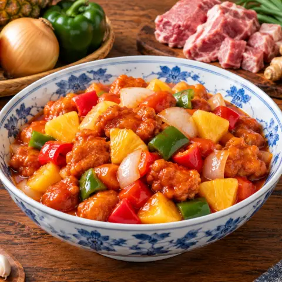

🍍 咕噜肉
复炸酥脆的猪肉配青椒和菠萝，裹上酸甜酱汁。
食材
- 猪肉400 克
- 洋葱1.5
- 大蒜2 瓣
- 姜15 克
- 小苏打0.38 茶匙
- 玉米淀粉13 汤匙
- 酱油3 汤匙
- 食用油750 毫升
- 糖70 克
- 醋60 毫升
- 番茄酱3 汤匙
- 伍斯特酱0.5 茶匙
- 蚝油1 茶匙
- 菠萝1 杯
- 甜椒1
做法
- 猪梅花肉切2厘米块。加半个洋葱泥、蒜泥和姜泥各1小勺、小苏打、2小勺淀粉和2大勺酱油拌匀，冷藏过夜（18–24小时）让肉变嫩。
- 酱汁：糖、醋、3大勺菠萝汁、番茄酱、伍斯特酱、1大勺酱油、蚝油、4小勺淀粉和120毫升水调匀。
- 猪肉拌入5大勺淀粉静置5分钟，再把剩下的淀粉逐块裹上。
- 180°C油温分批炸3分钟至金黄，捞到架子上。
- 油温升到200°C，复炸1分半钟到深金黄酥脆。
- 炒锅放1大勺油，蒜末、姜末和洋葱块炒1分半钟，加青椒再炒2分钟。
- 加入酱汁和菠萝煮约2分钟到浓稠，放入猪肉翻炒10秒。趁脆马上上桌。